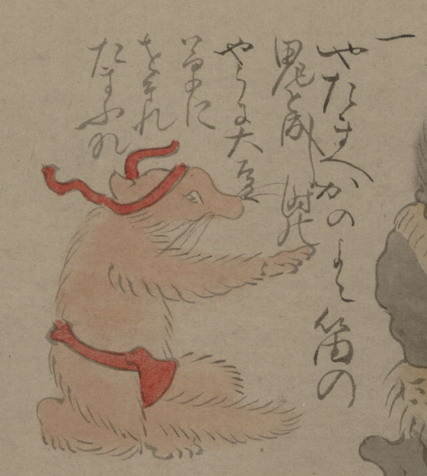

狐の化物。赤い鉢巻きと褌を身につけて、座っている。右腕を鬼の方に差しのばし、話しかけている。詞書に「一やたまへかのよこ笛の鬼と成し時のやうに大豆草にをそれたまふな」とある。
出典：親書誌：U426_nichibunken_0150：付喪神絵詞；ツクモガミエコトバ／日付：2010／資源識別子：U426_nichibunken_0150_0022_0000
Copyright (c)2010- International Research Center for Japanese Studies, Kyoto, Japan. All rights reserved.